Changes in PRIMAP-hist v2.6_final compared to v2.5.1_final for Taiwan, Province of China
2024-09-24
Johannes Gütschow
Change analysis for Taiwan, Province of China for PRIMAP-hist v2.6_final compared to v2.5.1_final
Overview over emissions by sector and gas
The following figures show the aggregate national total emissions excluding LULUCF AR6GWP100 for the country reported priority scenario. The dotted linesshow the v2.5.1_final data.
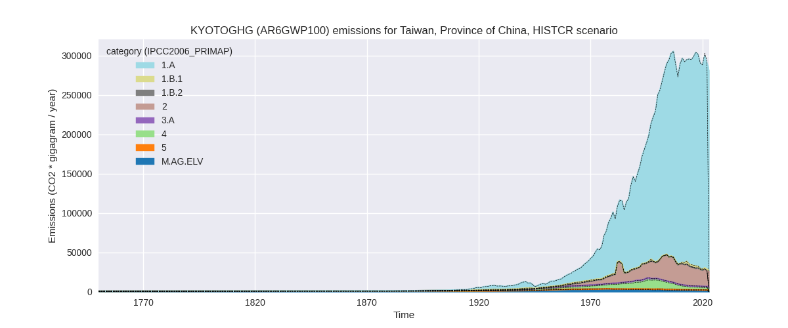
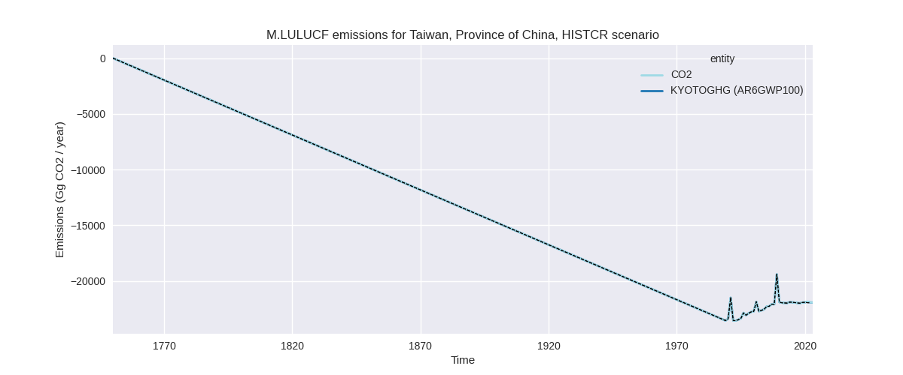
The following figures show the aggregate national total emissions excluding LULUCF AR6GWP100 for the third party priority scenario. The dotted linesshow the v2.5.1_final data.
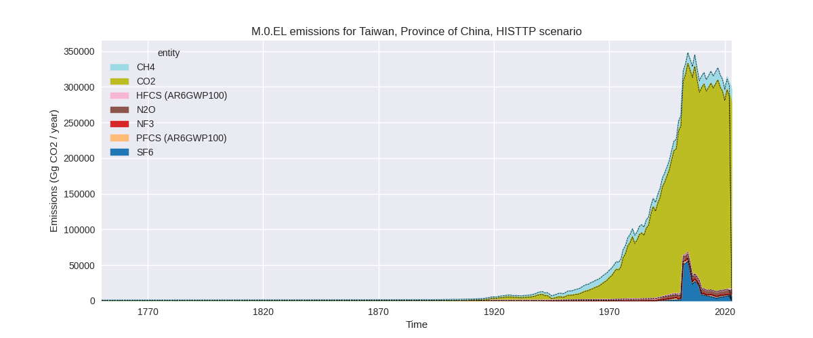
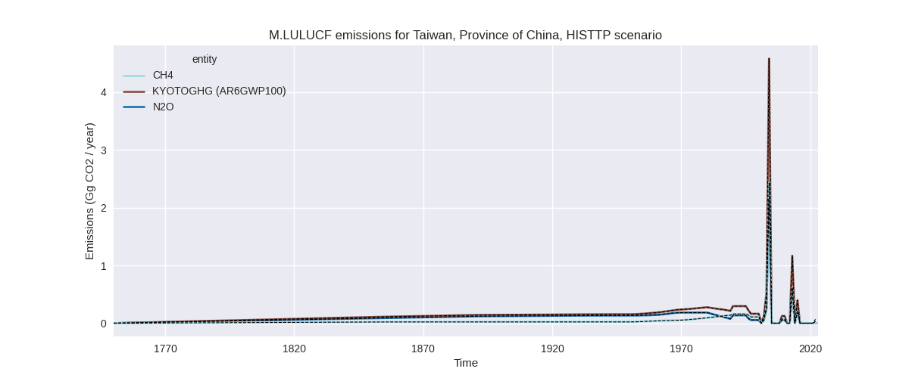
Overview over changes
In the country reported priority scenario we have the following changes for aggregate Kyoto GHG and national total emissions excluding LULUCF (M.0.EL):
- Emissions in 2022 have changed by -1.1%% (-3232.02 Gg CO2 / year)
- Emissions in 1990-2022 have changed by -0.1%% (-345.27 Gg CO2 / year)
In the third party priority scenario we have the following changes for aggregate Kyoto GHG and national total emissions excluding LULUCF (M.0.EL):
- Emissions in 2022 have changed by 1.3%% (3950.40 Gg CO2 / year)
- Emissions in 1990-2022 have changed by 0.2%% (517.37 Gg CO2 / year)
Most important changes per scenario and time frame
In the country reported priority scenario the following sector-gas combinations have the highest absolute impact on national total KyotoGHG (AR6GWP100) emissions in 2022 (top 5):
- 1: 1.A, CO2 with -4281.27 Gg CO2 / year (-1.6%)
- 2: 2, CO2 with 709.11 Gg CO2 / year (5.2%)
- 3: 2, N2O with 524.48 Gg CO2 / year (27.7%)
- 4: 5, N2O with -356.14 Gg CO2 / year (-33.9%)
- 5: 4, CO2 with 193.56 Gg CO2 / year (56.7%)
In the country reported priority scenario the following sector-gas combinations have the highest absolute impact on national total KyotoGHG (AR6GWP100) emissions in 1990-2022 (top 5):
- 1: 1.A, CO2 with -267.46 Gg CO2 / year (-0.1%)
- 2: 5, N2O with -175.83 Gg CO2 / year (-16.8%)
- 3: 2, CO2 with 45.19 Gg CO2 / year (0.3%)
- 4: 2, N2O with -15.91 Gg CO2 / year (-1.3%)
- 5: 4, CO2 with 11.33 Gg CO2 / year (4.6%)
In the third party priority scenario the following sector-gas combinations have the highest absolute impact on national total KyotoGHG (AR6GWP100) emissions in 2022 (top 5):
- 1: 4, CH4 with 1989.37 Gg CO2 / year (17.3%)
- 2: 2, SF6 with 1183.01 Gg CO2 / year (20.2%)
- 3: 1.A, CO2 with 853.44 Gg CO2 / year (0.3%)
- 4: 5, N2O with -356.14 Gg CO2 / year (-33.9%)
- 5: 4, N2O with 69.64 Gg CO2 / year (24.1%)
In the third party priority scenario the following sector-gas combinations have the highest absolute impact on national total KyotoGHG (AR6GWP100) emissions in 1990-2022 (top 5):
- 1: 4, CH4 with 176.21 Gg CO2 / year (1.7%)
- 2: 5, N2O with -175.83 Gg CO2 / year (-16.8%)
- 3: 4, N2O with 66.09 Gg CO2 / year (23.2%)
- 4: 1.A, CO2 with 49.88 Gg CO2 / year (0.0%)
- 5: 2, N2O with -44.84 Gg CO2 / year (-3.8%)
Notes on data changes
Here we list notes explaining important emissions changes for the country. ’' means that the following text only applies to the TP time series, while means that it only applies to the CR scenario. Otherwise the note applies to both scenarios.
- We have included the official 2023 inventory for Taiwan.
- Changes are mostly for 2021 and 2022 as the added year in the inventory (2021) shows increasing emissions after a few years of decreasing emissions. The only exception is energy CO2, where growth rates from the inventory are lower than EI2023 growth rates used in v2.5.1.
Changes by sector and gas
For each scenario and time frame the changes are displayed for all individual sectors and all individual gases. In the sector plot we use aggregate Kyoto GHGs in AR6GWP100. In the gas plot we usenational total emissions without LULUCF. ## country reported scenario
2022
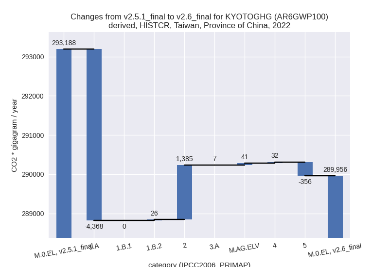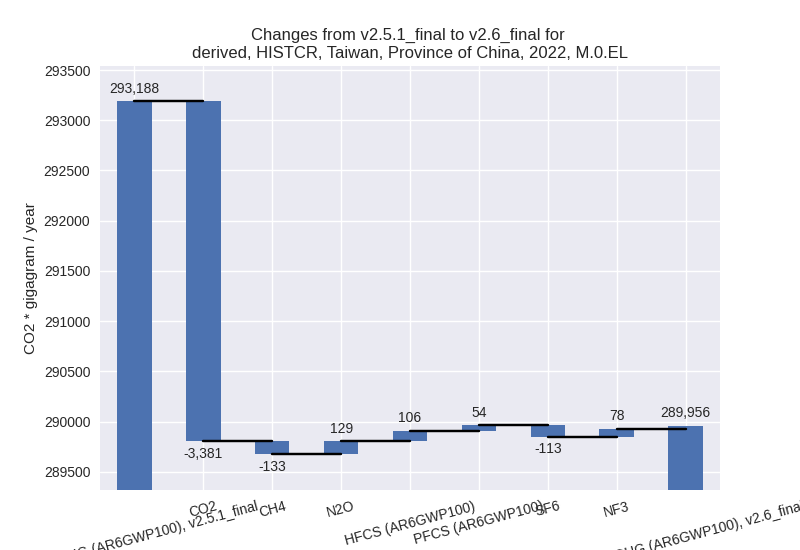
1990-2022
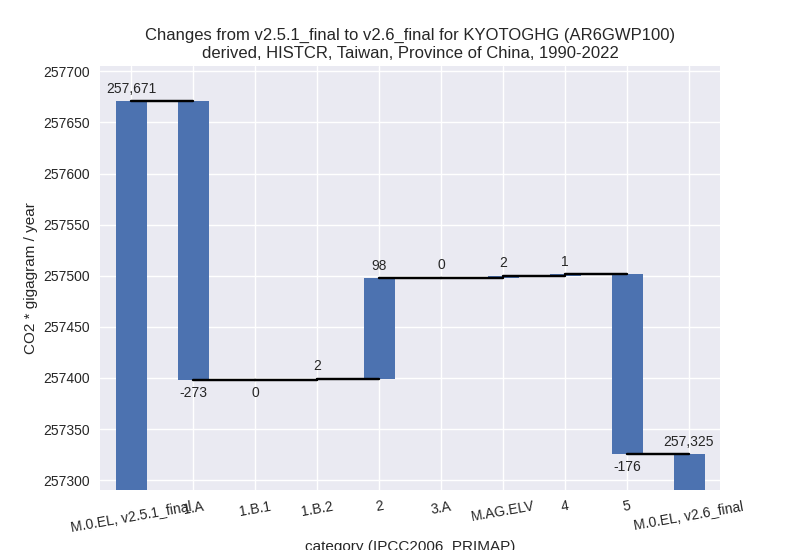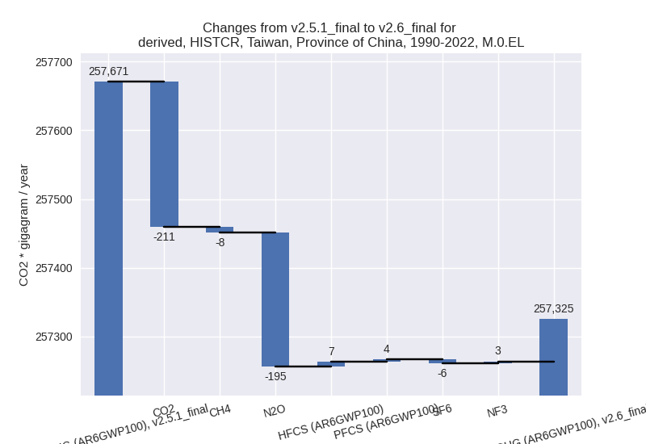
third party scenario
2022
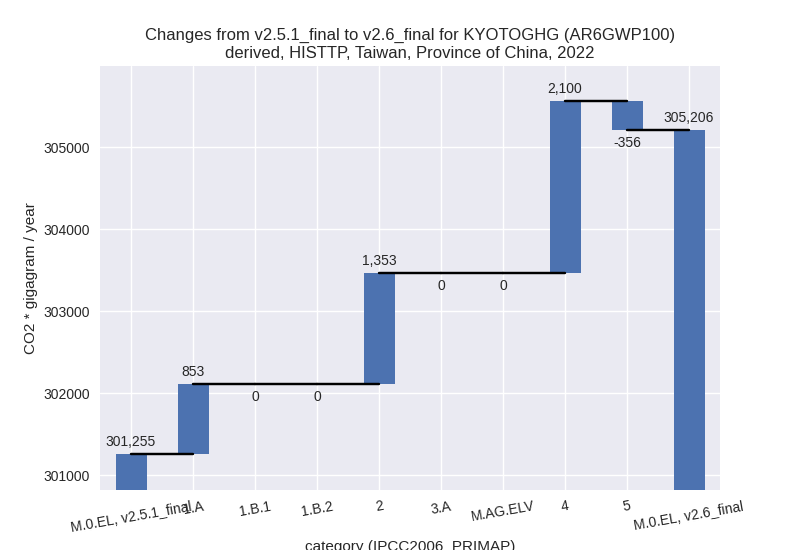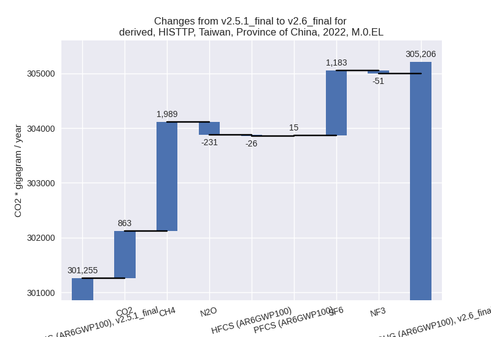
1990-2022
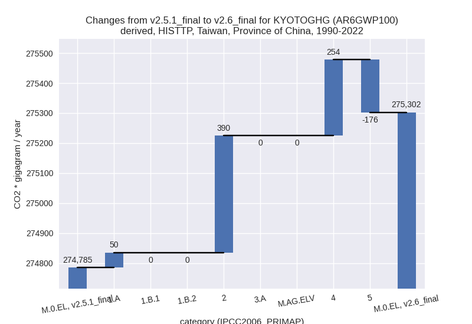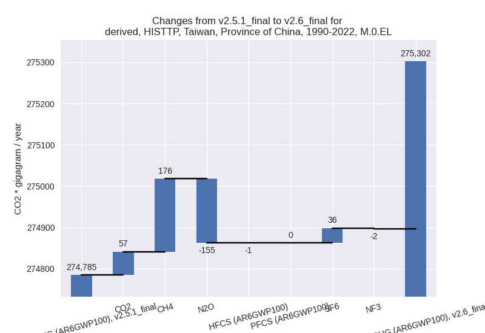
Detailed changes for the scenarios:
country reported scenario (HISTCR):
Most important changes per time frame
For 2022 the following sector-gas combinations have the highest absolute impact on national total KyotoGHG (AR6GWP100) emissions in 2022 (top 5):
- 1: 1.A, CO2 with -4281.27 Gg CO2 / year (-1.6%)
- 2: 2, CO2 with 709.11 Gg CO2 / year (5.2%)
- 3: 2, N2O with 524.48 Gg CO2 / year (27.7%)
- 4: 5, N2O with -356.14 Gg CO2 / year (-33.9%)
- 5: 4, CO2 with 193.56 Gg CO2 / year (56.7%)
For 1990-2022 the following sector-gas combinations have the highest absolute impact on national total KyotoGHG (AR6GWP100) emissions in 1990-2022 (top 5):
- 1: 1.A, CO2 with -267.46 Gg CO2 / year (-0.1%)
- 2: 5, N2O with -175.83 Gg CO2 / year (-16.8%)
- 3: 2, CO2 with 45.19 Gg CO2 / year (0.3%)
- 4: 2, N2O with -15.91 Gg CO2 / year (-1.3%)
- 5: 4, CO2 with 11.33 Gg CO2 / year (4.6%)
Changes in the main sectors for aggregate KyotoGHG (AR6GWP100) are
- 1: Total sectoral emissions in 2022 are 261866.71 Gg CO2 / year which is 90.3% of M.0.EL emissions. 2022 Emissions have changed by -1.6% (-4341.50 Gg CO2 / year). 1990-2022 Emissions have changed by -0.1% (-271.23 Gg CO2 / year).
- 2: Total sectoral emissions in 2022 are 21225.89 Gg
CO2 / year which is 7.3% of M.0.EL emissions. 2022 Emissions have
changed by 7.0% (1384.98 Gg CO2 /
year). 1990-2022 Emissions have changed by 0.4% (98.31 Gg CO2 / year). For 2022 the
changes per gas
are:
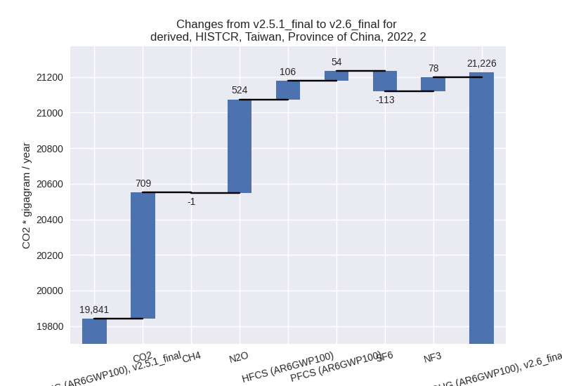 - M.AG: Total sectoral emissions in 2022 are 3294.65 Gg CO2 / year which is 1.1% of M.0.EL emissions. 2022 Emissions have changed by 1.5% (48.73 Gg CO2 / year). 1990-2022 Emissions have changed by 0.1% (2.11 Gg CO2 / year).
- 4: Total sectoral emissions in 2022 are 2874.97 Gg CO2 / year which is 1.0% of M.0.EL emissions. 2022 Emissions have changed by 1.1% (31.91 Gg CO2 / year). 1990-2022 Emissions have changed by 0.0% (1.38 Gg CO2 / year).
- 5: Total sectoral emissions in 2022 are 694.27 Gg
CO2 / year which is 0.2% of M.0.EL emissions. 2022 Emissions have
changed by -33.9% (-356.14 Gg CO2 /
year). 1990-2022 Emissions have changed by -16.8% (-175.83 Gg CO2 / year). For 2022
the changes per gas
are:
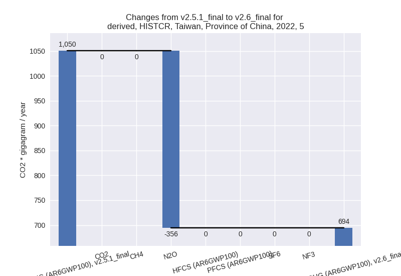
For 1990-2022 the changes per gas are:
third party scenario (HISTTP):
Most important changes per time frame
For 2022 the following sector-gas combinations have the highest absolute impact on national total KyotoGHG (AR6GWP100) emissions in 2022 (top 5):
- 1: 4, CH4 with 1989.37 Gg CO2 / year (17.3%)
- 2: 2, SF6 with 1183.01 Gg CO2 / year (20.2%)
- 3: 1.A, CO2 with 853.44 Gg CO2 / year (0.3%)
- 4: 5, N2O with -356.14 Gg CO2 / year (-33.9%)
- 5: 4, N2O with 69.64 Gg CO2 / year (24.1%)
For 1990-2022 the following sector-gas combinations have the highest absolute impact on national total KyotoGHG (AR6GWP100) emissions in 1990-2022 (top 5):
- 1: 4, CH4 with 176.21 Gg CO2 / year (1.7%)
- 2: 5, N2O with -175.83 Gg CO2 / year (-16.8%)
- 3: 4, N2O with 66.09 Gg CO2 / year (23.2%)
- 4: 1.A, CO2 with 49.88 Gg CO2 / year (0.0%)
- 5: 2, N2O with -44.84 Gg CO2 / year (-3.8%)
Changes in the main sectors for aggregate KyotoGHG (AR6GWP100) are
- 1: Total sectoral emissions in 2022 are 254058.74 Gg CO2 / year which is 83.2% of M.0.EL emissions. 2022 Emissions have changed by 0.3% (853.45 Gg CO2 / year). 1990-2022 Emissions have changed by 0.0% (49.88 Gg CO2 / year).
- 2: Total sectoral emissions in 2022 are 32436.35 Gg
CO2 / year which is 10.6% of M.0.EL emissions. 2022 Emissions have
changed by 4.4% (1353.07 Gg CO2 /
year). 1990-2022 Emissions have changed by 1.1% (389.66 Gg CO2 / year). For 2022 the
changes per gas
are:
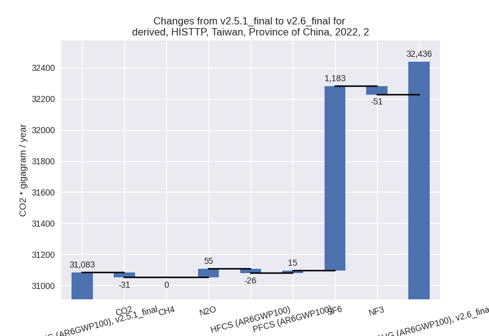 - M.AG: Total sectoral emissions in 2022 are 4149.13 Gg CO2 / year which is 1.4% of M.0.EL emissions. 2022 Emissions have changed by 0.0% (0.00 Gg CO2 / year). 1990-2022 Emissions have changed by 0.0% (0.00 Gg CO2 / year).
- 4: Total sectoral emissions in 2022 are 13867.29 Gg
CO2 / year which is 4.5% of M.0.EL emissions. 2022 Emissions have
changed by 17.8% (2100.02 Gg CO2 /
year). 1990-2022 Emissions have changed by 2.3% (253.66 Gg CO2 / year). For 2022 the
changes per gas
are:
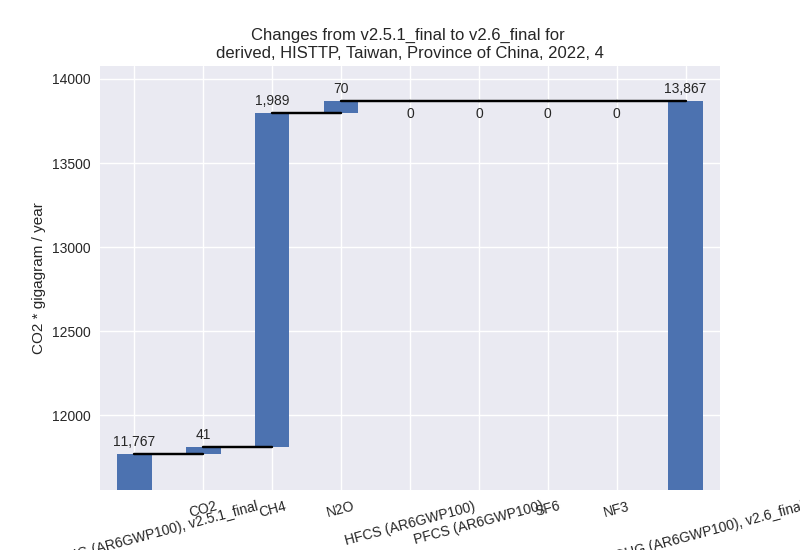
For 1990-2022 the changes per gas are:
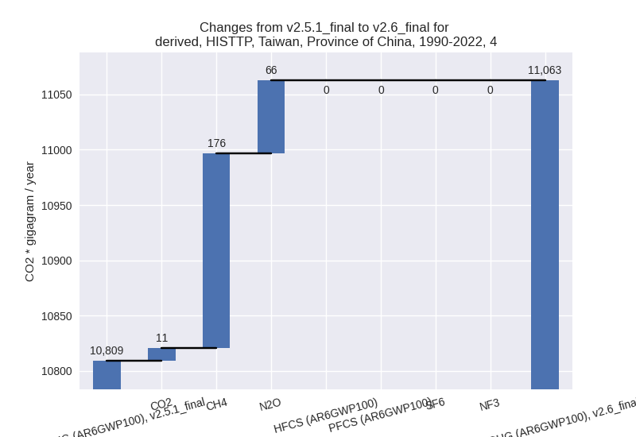 - 5: Total sectoral emissions in 2022 are 694.27 Gg
CO2 / year which is 0.2% of M.0.EL emissions. 2022 Emissions have
changed by -33.9% (-356.14 Gg CO2 /
year). 1990-2022 Emissions have changed by -16.8% (-175.83 Gg CO2 / year). For 2022
the changes per gas
are:

For 1990-2022 the changes per gas are: